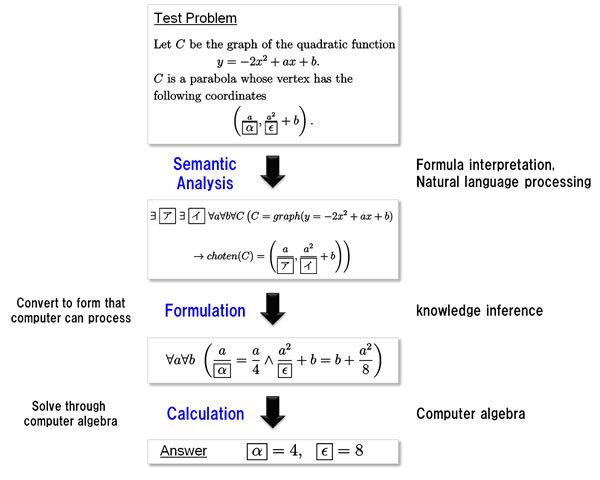

For a computer to solve math entrance-exam problems(1), it must first convert the problem text, which is expressed in natural language and formulas meant to be easily understood by humans, into a form that a program can execute. The next step is for a program known as a "solver" to solve the problem. This requires three processes (see Figure 2).
Semantic analysis: Understand the problem text, which is expressed as natural language and formulas easily understood by humans.
Formulation: Convert to a form that can be processed by a computer.
Calculation: Find the answer using the mathematical solver.
Getting a computer to understand text that was intended for humans is not an easy task. Using natural-language processing to draw out a semantic representation of the problem text is not simply a matter of analyzing the words. It also involves skillfully integrating mathematical terminology and a high-school level understanding of math. Beyond that, it needs to decide the best way for the computer to solve the problem. Currently only approximately 50–60% of Level 2 entrance-exam problems can be solved, even using computer algebra technology, so the calculation algorithm needs improvement.
As should be clear, each of these steps still poses major theoretical and practical problems, and for each one, the solution will involve an appropriate combination of various technologies.

Figure 2: Procedure for solving math problems
Goals for the Math Team
The team is striving to develop technology at a level that can solve entrance-exam math problems well enough to pass the Todai exam. It goes about this by using an approach to dealing with human knowledge from an information-processing technology perspective.
As for the Todai Robot math section, NII and Fujitsu Laboratories jointly aim to develop the technologies needed for human-centric IT. These include formula recognition methods to recognize and interpret problem texts and put it into a data format that a computer can understand, natural language processing to generate a formula representation that the formula solver can understand, and formula-processing technology that can solve the composed formula quickly and accurately. The hope is that the technologies developed as part of this project will enable anyone to easily use sophisticated mathematical analysis tools.
(Press Release, September 10, 2012 National Institute of Informatics and Fujitsu Laboratories Ltd, )